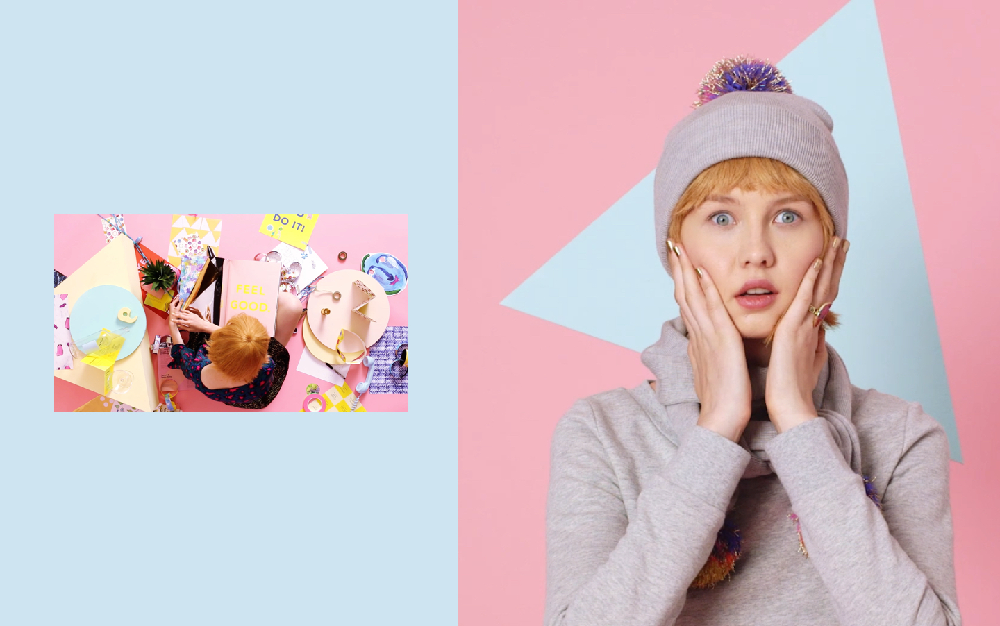

2015
Kate Spade Saturday
Kate Spade Saturday—Fashion Innovation Lab as Instant International Brand
Creative Direction, In-House
This work was completed with the amazing talent of Kate Spade Saturday. Lead by Kyle Andrews, Theresa Canning Zast and Katie Hatch. As Director of Brand Creative my team consisted of Theresa Caffrey, Jenna Kaminsky, Katie Schad, Kristie Malvindi, Mallory Rice, Dana Corl, Lauren Tamaki, Sung Mun, Gillian Haro, & Khira Jordan. With Pomaika‘i Neff and Caitlin McConnell.
Background
Kate Spade Saturday was a 40 person start-up creating an accessible and more youthful apparel and accessories brand to its mother brand, the established Kate Spade NY brand. Led by Director Kyle Andrew, Creative Director Theresa Canning Zast, head of apparel and accessory design Katie Hatch, and 36 other incredible talented women (for the majority of my time, I was the sole male on the entire team), KSS made a huge splash for its bold design and international reach. For the second year of its two-year life I served as director of brand creative.

fig7.1
Kate Spade Saturday's Spring 2016 Campaign photography by Brayden Olsen ↗, with Art Direction by Lauren Tamaki ↗
Design Problems
I led the design of marketing, communications, brand and e-commerce photography. During my tenure we launched four seasonal campaigns, photographed thousands of products, launched and maintained retail stores in Japan, Singapore, Los Angeles and New York.
fig7.2
Kate Spade Saturday's 2015 Holiday Campaign photography by Jimmy Marble ↗
Core Tools
As an in-house design, and content creation team we constantly devised new ways of planning the months ahead. We created systems which combined my learning from larger institutions like MoMA and J.Crew, assembling merchants, photo shoots, models, messages and delivery in sync with one another.
fig7.3
Kate Spade Summer 2015 Campaign
Brand Worlds
A highlight was our final Holiday campaign in which we treated each e-commerce photo like an ad (many as video) and each marketing email as a story. Working with photographer Jimmy Marble we created a world unlike anything in fashion at the time and hit our numbers at the same time.
fig7.4
Kate Spade Saturday's Holiday 2016 Campaign video and photography by Jimmy Marble ↗
The Spirit of Saturday
An existential thread throughout our time was trying to evoke “The Spirit of Saturday” in everything we do. This elusive spirit meant so many different things for our audience but provided a unsolvable problem for constant exploration. This came through in product, campaign, and every thing we created.
fig7.5
Sketches for t-shirt graphics, a neverending quest to find the elusive “Spirit of Saturday” that would speak to girls from New York to Tokyo
fig7.6
Email Marketing photography with styling by Angharad Baily
fig7.7
Kate Spade Saturday's Summer 2015 marketing image (left) & painting for marketing email (right) by Helena Wurzel ↗
We had some big wins, some big defeats and the eventually the rug was pulled from beneath us as the brand’s parent company Limited Brands decided to invest more in licensing than in product creation shuttering all Jack Spade store and all Saturday operations.
We were extremely proud of what we made and the people we met along the way. The Kate Spade Saturday diaspora reaches far and wide.
For more about this project please get in touch via Linkedin ↗
You might also like...
J.Crew—How an Internal Agency can connect Ecomm, Catalogs, & the Mall
2012-2014 · Design & Direction, In-House
Philz Coffee—The Fastest way to Order the World’s Slowest Cup of Coffee
2017 · Design & Direction, Work & Co.